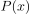
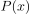
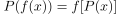
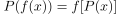
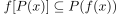
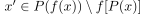
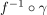
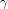
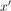

Homeomorphismen erhalten Pfadkomponenten
1. Satz
Seien  und
und  topologische Räume und
topologische Räume und  ein Homeomorphismus.
Dann gilt für
ein Homeomorphismus.
Dann gilt für  und die Pfadkomponente , dass die Pfadkomponente von
und die Pfadkomponente , dass die Pfadkomponente von  in
in  

2. Beweis
Folgt aus der Aussage über Pfadkomponenten unter stetigen Injektionen:
Sei gegeben, so gilt .
Angenommen es existiert ein , so existiert ein Weg  mit  von nach , Widerspruch, d.h. es gilt  und damit Gleichheit
und damit Gleichheit